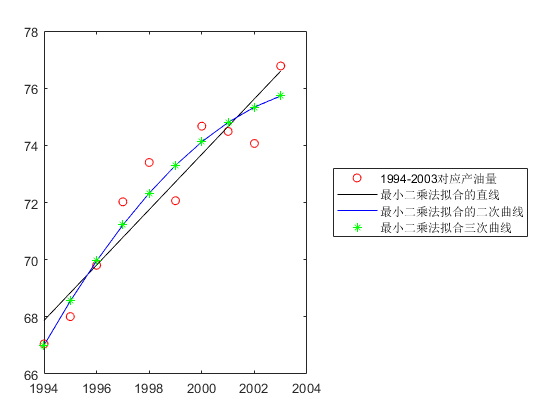

X=[1994:1:2003];
Y=[67.052,68.008,69.803,72.024,73.400,72.063,74.669,74.487,74.065,76.777];
plot(X,Y,'ro');
hold on
sx=sum(X);
sx2=sum(X.*X);
sy=sum(Y);
sxy=sum(X.*Y);
A=[10,sx;sx,sx2];
b=[sy;sxy];
a1=GaussElimination(A,b)
f1=a1(1)+a1(2).*X;
plot(X,f1,'k-')
sx3=sum(X.^3);
sx4=sum(X.^4);
sx2y=sum(X.^2.*Y);
A=[10,sx,sx2;sx,sx2,sx3;sx2,sx3,sx4];
b=[sy;sxy;sx2y];
a2=GaussElimination(A,b)
f2=a2(1)+a2(2).*X+a2(3).*X.^2;
plot(X,f2,'b-')
sx5=sum(X.^5);
sx6=sum(X.^6);
sx3y=sum(X.^3.*Y);
A=[10,sx,sx2,sx3;sx,sx2,sx3,sx4;sx2,sx3,sx4,sx5;sx3,sx4,sx5,sx6];
b=[sy;sxy;sx2y;sx3y];
a3=GaussElimination(A,b)
f3=a3(1)+a3(2).*X+a3(3).*X.^2+a3(4).*X.^3;
ans1=0;
k=1
for i=1994:2003
ans1=ans1+(a3(1)+a3(2)*i+a3(3)*i^2+a3(4)*i^3-Y(k))^2
k=k+1
end
ans1=sqrt(ans1)
plot(X,f3,'g*')
l=legend('1994-2003对应产油量','最小二乘法拟合的直线','最小二乘法拟合的二次曲线','最小二乘法拟合三次曲线','orientation','vertical','location','eastoutside');
a1 =
1.0e+03 *
-1.8650
0.0010
a2 =
1.0e+05 *
-2.9084
0.0029
-0.0000
a3 =
1.0e+06 *
-2.7272
0.0039
-0.0000
0.0000
k =
1
ans1 =
0.0030
k =
2
ans1 =
0.3025
k =
3
ans1 =
0.3280
k =
4
ans1 =
0.9736
k =
5
ans1 =
2.1162
k =
6
ans1 =
3.6365
k =
7
ans1 =
3.9410
k =
8
ans1 =
4.0368
k =
9
ans1 =
5.6511
k =
10
ans1 =
6.7339
k =
11
ans1 =
2.5950
